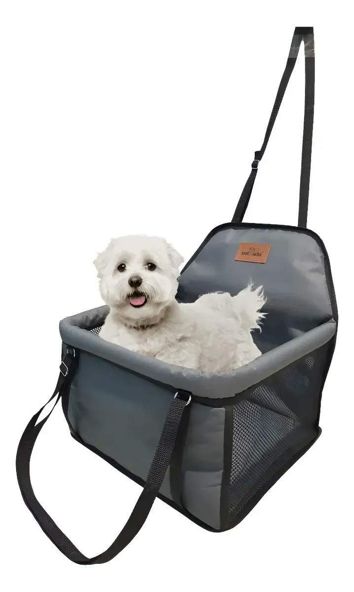
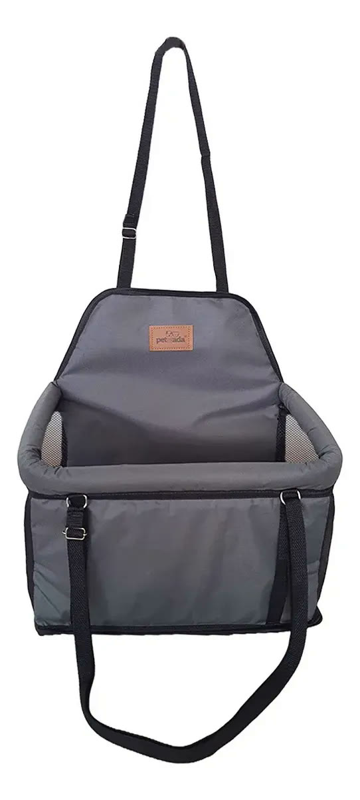
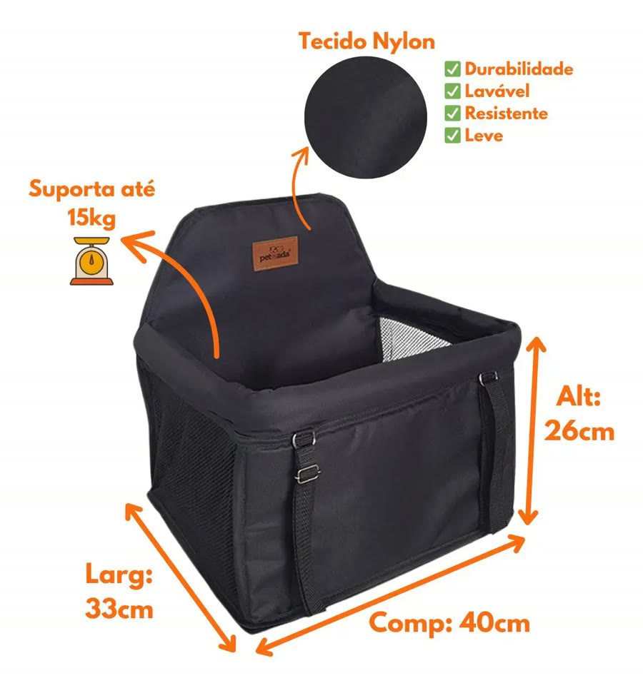
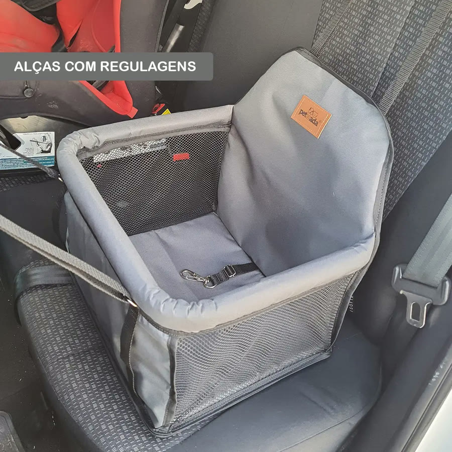
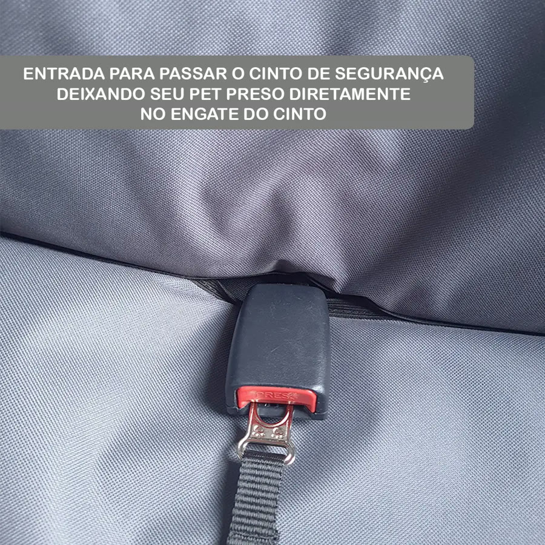
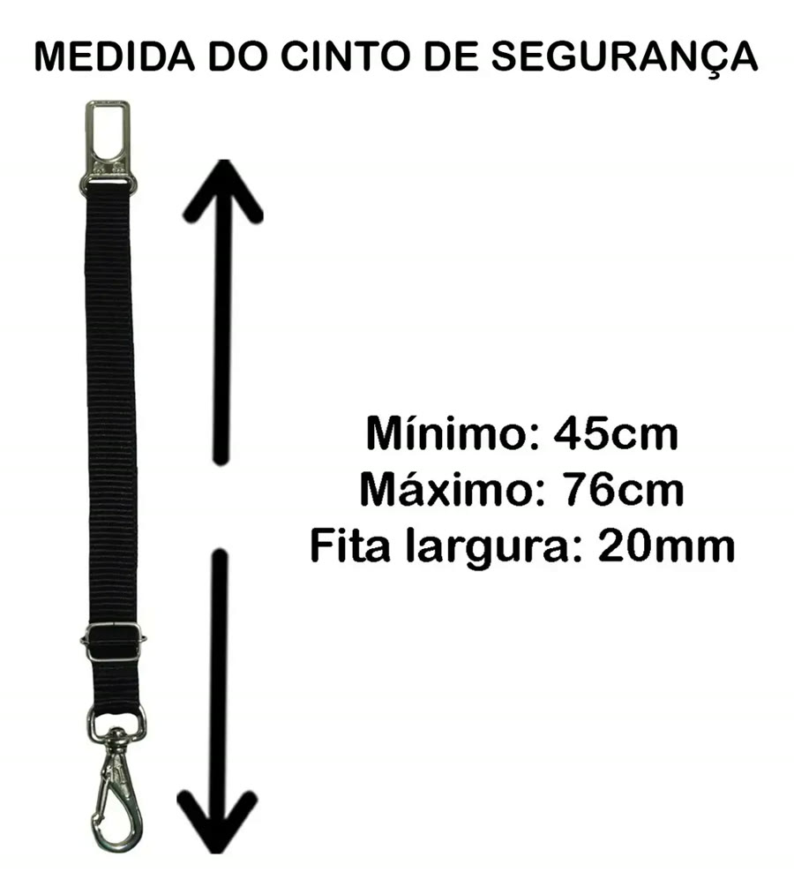
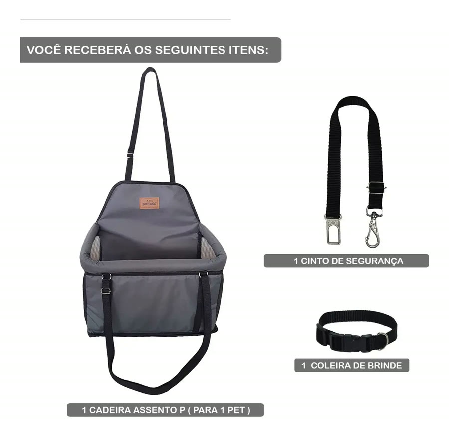
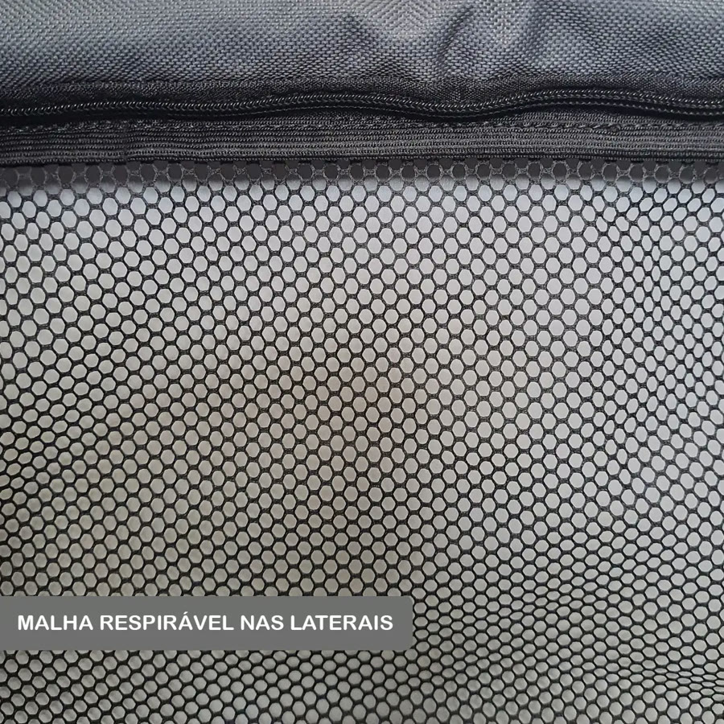
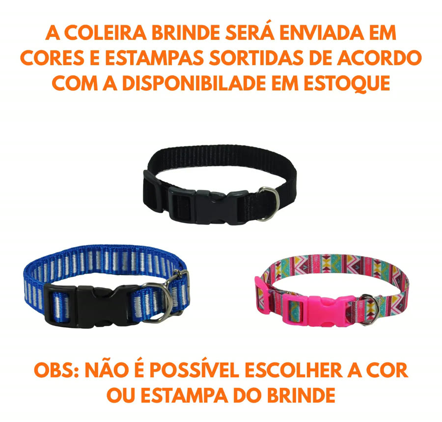

Achado nº 32
Cadeirinha pet para banco do carro (até 15 kg)









O que diz a página oficial do produto
- É um assento de nylon para pet que se prende no banco do carro por alças com regulagem
- Indicado para cães e gatos de porte pequeno e médio, de até 15 kg; filhotes, adultos e idosos
- Vem com 1 cinto de segurança para pet, que encaixa no engate do cinto do carro; o cinto regula de 45 cm a 76 cm
- O assento tem uma entrada para passar o cinto e deixar o pet preso direto no engate
- As laterais têm malha para ventilação
- Mede 33 cm de largura, 40 cm de comprimento e 26 cm de altura
- Segundo o anúncio, é dobrável e protege o banco do carro da sujeira
- Segundo a ficha técnica, não é à prova d'água e não serve para cabine de avião
- Vem com uma coleira de brinde, de cor e estampa sortidas (não dá para escolher)
- No Mercado Livre, tem nota 4,8 com mais de 1.400 avaliações e mais de 5 mil vendidos
Link de afiliado: se você comprar por ele, a Achadaria pode receber uma comissão, sem custo extra para você. Preço, estoque e entrega são da loja e podem mudar; confira lá antes de comprar.